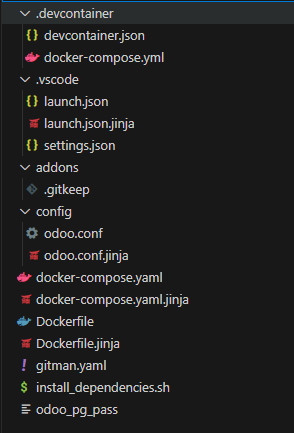
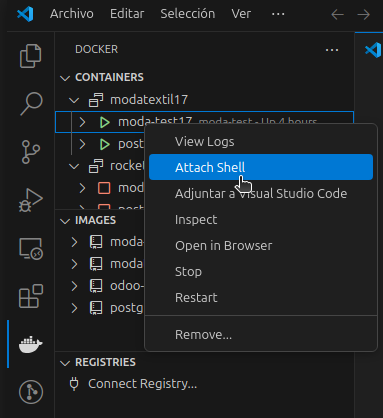
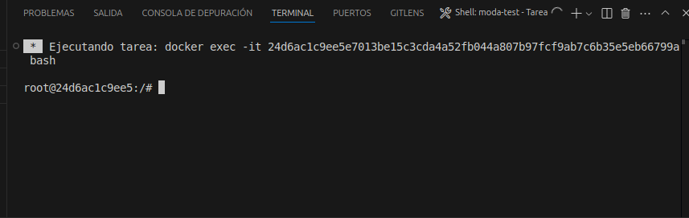
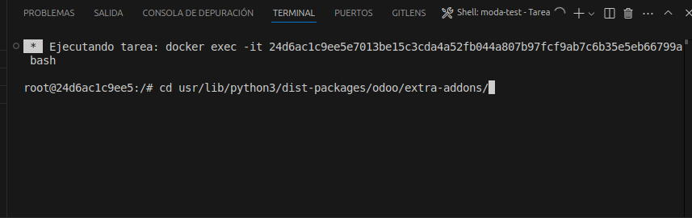
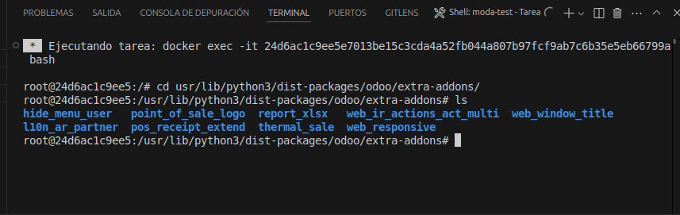
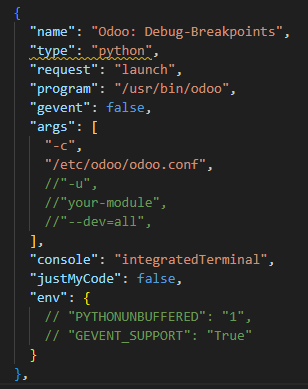
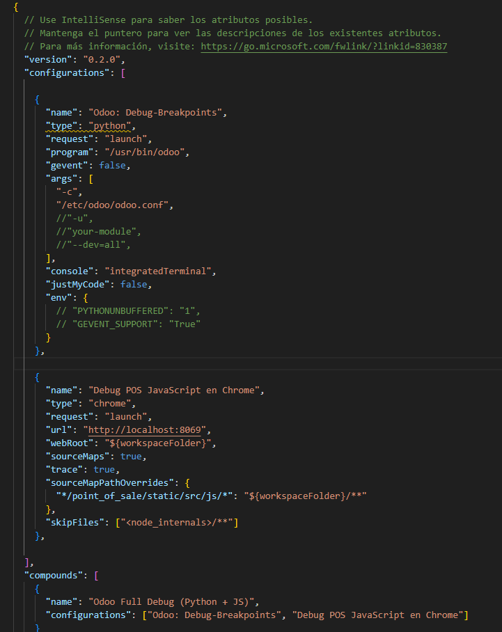

Estructura de Rocketdoo
En esta sección veremos con mayor claridad cómo está conformada la estructura de Rocketdoo, y de esta manera podremos entender mejor cómo funciona internamente, o al menos comprender la importancia y el uso de algunas carpetas y archivos de Rocketdoo.

Como se puede ver en la imagen, hay una larga lista de carpetas y archivos que componen toda la estructura de Rocketdoo.
Sin embargo, nos centraremos en las carpetas y archivos más relevantes para un desarrollador.
Estas carpetas y archivos deberían ser conocidos por cualquier desarrollador de Odoo.
/Addons
Primero mencionaremos la carpeta addons.
Una vez que tengas tu entorno listo, ya sea trabajando en Visual Studio Code o directamente desde la terminal, esta carpeta se utilizará para alojar los desarrollos que vayas a realizar, así como algunos módulos necesarios de forma individual.
Puedes crear una carpeta con el nombre de tu módulo y agregar su contenido, o usar la extensión Docker de VSCode. Con la opción Attach Shell podrás abrir una terminal y moverte al directorio donde se encuentran los módulos:
/usr/lib/python/dist-packages/odoo/extra-addons.
Desde ahí, puedes usar el comando scaffold de Odoo para generar un nuevo módulo.




Importante: La carpeta “addons” dentro del contenedor de desarrollo está mapeada como un volumen hacia la carpeta “extra-addons”.
Por eso debemos dirigirnos a esa carpeta dentro del contenedor.
Recuerda que la carpeta originaladdonspertenece al núcleo de Odoo, lo cual será más evidente cuando estemos depurando código desde dentro del contenedor.
Para crear un nuevo módulo con el comando scaffold, debes ejecutarlo así:
Esto generará un módulo con los archivos y estructura necesarios para comenzar a desarrollar en el directorio actual.
Una vez creado, también verás que el nuevo módulo aparece en tu entorno de trabajo dentro de la carpeta addons en VSCode.
Recuerda: La carpeta
addonsen tu directorio de trabajo se llamaextra-addonsdentro del contenedor de Odoo.
/Config/odoo.conf
El archivo odoo.conf, ubicado en el directorio /config/, es especialmente importante para desarrolladores experimentados en Odoo.
Este archivo contiene toda la configuración del sistema a nivel de servidor.
Gestiona el mapeo de los módulos de terceros y desarrollados, la configuración de la contraseña maestra, la ruta del archivo de logs, entre otros.
De todos modos, no te preocupes, ya que normalmente no será necesario modificar este archivo manualmente, pues se configura automáticamente durante el arranque del framework.
Launch.json
Dentro del directorio oculta .vscode/ se encuentra el archivo launch.json, el mismo permite configurar las opciones de depuracion de codigo una vez dentro del contenedor de desarrollo. Este archivo nos muestra dos tipos de depuracion mas una extra que combina ambas. Estas dos configuraciones principales nos permite optar por depurar el codigo para Python backend o la segunda opcion para depurar el POS (Punto de Ventas), para los desarrollos en JavaScript. Y la tercera opcion es un mix de ambas opciones al mismo tiempo. Ademas, tenemos algunos parametros que nos permitiran definir que y como reiniciar nuestros contenedores para reflejar rapidamente los cambios que el desarrollador este realizando. En estos parametros podemos descomentar las lineas:
//"-u", //"your-module", //"--dev=all",
y definir el nombre de nuestro modulo en desarrollo para poder actualizar los cambios al instante.


Enterprise
Como habrás visto, al lanzar ROCKETDOO, te pregunta si deseas trabajar con la versión Community o Enterprise de Odoo.
¡Muy bien! Si tu respuesta es "ce" (Community Edition), no necesitas hacer nada adicional.
Pero si tu respuesta es "ee" (Enterprise Edition), es muy importante que antes de lanzar Rocketdoo con el comando rocketdoo up -d o rkd up -d tengas la carpeta Enterprise en tu directorio de trabajo, al mismo nivel que la carpeta addons.
De esta manera, el sistema podrá mapear correctamente los módulos de Enterprise y hacer la configuración necesaria en el entorno para ejecutar esta edición de Odoo.